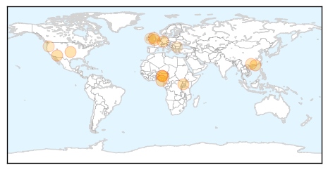

30 Day Trends
Web: 0 alerts, 0 warnings
Twitter: 0 alerts, 0 warnings
Top Articles:
- 0.995
- Prevention measures of influenza
- 0.994
- Maricopa County Health Department reports first pediatric death from flu for 2015
- 0.966
- Jordan suspends import of pet birds from Nigeria over bird flu
- 0.936
- Bird Flu Is Under Control – Minister
- 0.933
- Scientists and Doctors May Soon Be Able To Forecast Flu Patterns
- 0.925
- DODDS worker in Wiesbaden treated for tuberculosis
- 0.919
- Rexall, AMREF immunizing Ugandan children for every Canadian flu shot
- 0.910
- Low severity AI found at UK chicken farm
- 0.892
- Plateau Government Destroys 7 Poultry Farms, Kills 20,000 birds
- 0.838
- All four major Triad hospitals lift flu restrictions
- 0.801
- News Scan for Feb 04, 2015
- 0.755
- Flu and the cold blamed for increase in deaths this winter
- 0.717
- 20,000 chickens killed, 7 farms destroyed in Plateau
- 0.701
- Students without current vaccines to be sent home Feb. 18
- 0.618
- Crisis continues with 523 patients on trolleys
- 0.525
- Defra raises UK bird flu risk level
Top Tweets:
-
No tweets found for Feb 04, 2015
Web/News Articles

Tweets

Article Locations
Article Confidences